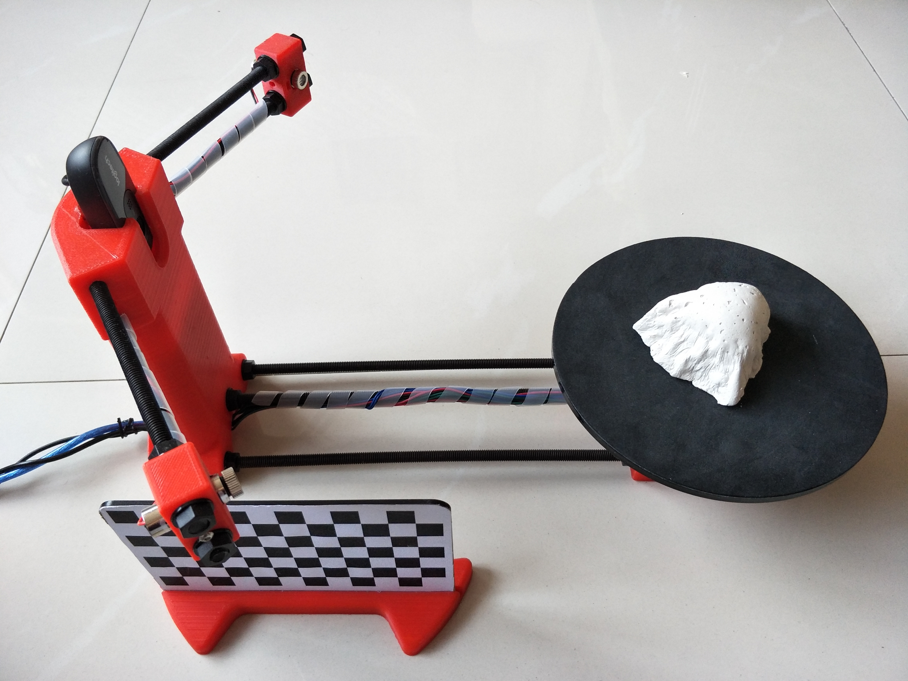

This repository provides the data used in our recent publication “Rethinking Road Surface 3D Reconstruction and Pothole Detection: From Perspective Transformation to Disparity Map Segmentation”.
A story behind this work:
When working on this project, I was a third-year Ph.D. student at the University of Bristol.
When submitting this paper, I was a fresh postdoc at HKUST.
When this work was finally accepted, I have been working at UCSD for almost a year, and my postdoc career is nearly coming to an end…
We experienced a very annoying review process for this paper. It was originally submitted for peer-review on Apr. 11, 2019. We got the initial feedback on Jul. 28, 2019, and resubmitted our first revision on Aug. 22, 2019. However, nothing was back to us until Jul. 09, 2020 (after DOZENS of emails from us enquiring about the reviewer’s feedback). We submitted the second revision on Aug. 06, 2020, and FINALLY got accepted on Jan. 01, 2021. So, it was reviewed for 21 months. In my opinion, this work is already out-of-date when it was published. Anyway, I am going to provide you with the data we used in this work.
The pothole detection dataset can be download from this repository. You can run our demo code to see the visualization of different types of road data.
In our previous work, the accuracy of the reconstructed 3D road surface was evaluated using three sample models printed with a MakerBot Replicator 2 Desktop 3D Printer. This is an indirect way! Therefore, in this work, we evaluated the accuracy of reconstructed road potholes in a straightforward way.
We first poured enough gypsum plaster into a pothole and dug the gypsum mold out, when it became dry and hardened. An example of the gypsum mold is shown below:
